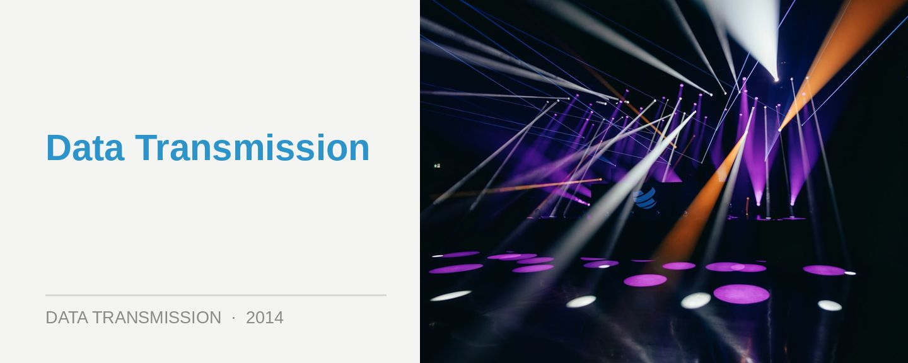

John Digweed plays Berlin on a Wednesday night
John Digweed plays Berlin on a Wednesday night
One of the small oddities of the largely unbeatable electronic music scene in Berlin is the relative absence of any kind of a UK presence. In terms of the overall contribution made to dance culture, London competes toe-to-toe with the German capital; but living in Berlin, you wouldn’t necessarily know it.
While a renegade like Scuba and his Hot Flush successfully infiltrated the scene, there’s largely an absence of drum n’ bass and its associated dubstep, grime and bass music brethren. And while Deutsch house heavies like Steve Bug and Solomun regularly venture across the pond, rarely does it work the other way around.
Disclosure’s headline set at Berghain on a Friday night in April was a wonderful, and all too rare oddity; and the same story goes for a recent appearance of Carl Cox at Watergate. Otherwise, the opportunity to see other veterans like Sasha, John Digweed, Nick Warren, King Unique and Danny Howells are incredibly rare (not to mention their global compatriots like Hernan Cattaneo, Guy J and Henry Saiz).
While they’re a pack who’ve traditionally been termed as ‘progressive’, perhaps that’s part of the problem, as it sells short their general adeptness across the spectrum of house and techno. Basically, there’s zero chance they’d have any troubles rocking those open-minded Berlin crowds. In spite of this, their appearances are so rare that when one of them does make the short flight over, it’s somewhat of a coup. When Sasha played the Panorama Bar for the first time in 2011, shockingly it was the first time he’d played in the city since the Love Parade nearly a decade earlier. Queue similar astonishment when it was announced that fellow veteran John Digweed would be making his own long-awaited return; on a Wednesday night, no less.
And not only was it a midweek marathon set, it would be also at one of Berlin’s most charming little venues. ://about blank takes its name from what’s written on your Internet Explorer browser bar when it collapses into nothingness, and it’s a suitably nondescript title for the gritty charms of the venue. A perfect example of Berlin’s tendency for repurposing old spaces and turning them into something cool, it’s an old building that’s been renovated… but only barely.
Even the trademark mirrorball upstairs is flanked by graffiti scrawl, and walls that look like they could crumble at any moment. It’s all part of the fun though, and ://about blank is a hot mess. There’s endless corners to explore, including an impressive courtyard area for the sweaty summer months, though tonight it’s only the dark stretch of the main room that’s open.
2.30am is Digweed’s scheduled time of arrival. Perhaps a little late for a school night, but like the dependable veteran that he is, he’s there to setup behind the decks merely minutes after the allotted time. What was remarkable earlier on is the distinct lack of a queue to get into the club; though by now the room is comfortably full, perhaps less than you’d expect from a DJ of his caliber, but it offers a much more comfortable dancing experience than what you’d normally get.
Digweed taking his place behind the decks is greeted by a welcome burst of energy; a slew of deeper tracks that possess enough shimmer and groove to easily grab the crowd’s attention and keep them onside. It’s sounding, dare I say it, nice and “proggy”. As you’d expect from a DJ known for the precision of his programming, there’s plenty of hard work happening, as he layers his tracks and makes full use of the three decks before him.
It’s around 90 minutes in that marks the transition into the deeper, techier selections; stripping out the melody and bringing in the more stripped-back grooves, and it’s the natural movement for a DJ who knows full well how to pace his set properly (with a modest 20+ years of DJing experience to draw upon). This was just a prelude though for the final hour or so of his set when he really unleashed the full intensity of his record box (or CD wallet, as it may be).
It’s an hour or so of dirty, dirty techno, and progressive with as much pummeling force as a punch to the face. A roaring wall of sound, and some particularly fierce percussive buildups. Unrelentingly heavy, basically. Shazam stubbornly refuses to identify any of these thumpers, which is likely a reflection of the upfront nature of the selections (no doubt a few future Bedrock releases in there).
The cherry on top is how he brings it all back down at the end, with an explosive burst of progressive melody courtesy of Future Beat Alliance’s moody 2009 stunner Pitch Black. After all that unrelenting intensity, the ethereal breakdown of the tune engulfing the room really is too good to be true.
Over the years I’d ceased to think of Digweed as a “progressive” DJ, as the connotations don’t really do him justice. After all, in April this year he warmed up the mainstage of Mannheim’s Time Warp. It’s perhaps one of the world’s most seminal techno events, but it’s all in a day’s work for Diggers. However, after living in Berlin for 2 years, I’m much more conscious of the particular characteristics of the UK sound; the melodies, the grooves, the spacious sonic qualities of many of those records. Perhaps “progressive” does have its uses after all.
On the same not, these were not the shimmering, luxurious melodies of one-time Digweed protégée Guy J. Rather, it was a slamming and often brute-force variation of the sound… served with liberal lashings of techno, particularly in the brutal latter stages of the set.
Soon may he return to the techno capital.
Words: Angus Thomas Patterson